[10-3] 软件I2C读写MPU6050 — 学习笔记
- 课程：江协科技《STM32入门教程-2023版 细致讲解 中文字幕》
- 视频：BV1th411z7sn?p=33，1:03:31（3811 秒）
- 素材：254 帧关键帧（每 15 秒，宽 1280px）+ PP-OCRv4 画面硬字幕 OCR（939 段）；关键截图 16 张随笔记收录（源图在
vidsum_out/stm32_p33/frames/，站内图片在assets/images/stm32-33/） - 字幕情况：该集 B 站没有 CC/AI 字幕，文本由画面烧录的中文字幕 OCR 得到（source=subtitle-ocr）；错字主要是
I2C被识成「12C」（21 处）、编译→「扁译」、读取→「卖取」、寻址→「寻均/寻改」、看到→「香到」、模式→「模贰」、驱动→「码动」，画面里还能看到 Keil 编译输出（compiling …、fatal error: Delay.h file not found，只在画面 Keil 面板、未进入 OCR 文本）——这些不是老师口述内容，已剔除/校正（清单见文末「存疑」）。 - 本集定位：这是模块 10 的代码课（超长实操）——两层模块从零手写：先写 MyI2C 协议层（软件模拟 I2C 时序，不占 STM32 硬件外设），再在它之上写 MPU6050 驱动层（读写寄存器、配置、取数），最后由 main 应用层调用。结尾 1:02:45 总结分层架构，无下集预告（下一集应是硬件 I2C）。
一句话结论
工程由 OLED 显示工程复制改名 10-1 软件I2C读写MPU6050，接线很简单：VCC/GND 供 3.3V、SCL→PB10、SDA→PB11（软件 I2C 不占外设资源、引脚可任意指定，这是它相对硬件 I2C 的最大优点；模块自带上拉电阻，无需外挂）。程序分三层：main（应用层）→ MPU6050（驱动层）→ MyI2C（协议层）。协议层 MyI2C.c/h 全部是「用 GPIO 手动翻转电平模拟时序」：MyI2C_Init = 开 GPIOB 时钟 + GPIO_Mode_Out_OD（开漏输出，兼具输入输出、可释放总线） + GPIO_Pin_10 | GPIO_Pin_11 + GPIO_Speed_50MHz + GPIO_Init + 最后 GPIO_SetBits(GPIOB, GPIO_Pin_10 | GPIO_Pin_11) 把总线置高释放（空闲态）；三个底层函数 MyI2C_W_SCL(uint8_t BitValue)／MyI2C_W_SDA(uint8_t BitValue)／MyI2C_R_SDA()，内部用 GPIO_WriteBit(GPIOB, GPIO_Pin_10, (BitAction)BitValue)／GPIO_ReadInputDataBit(GPIOB, GPIO_Pin_11) + Delay_us(10)——不用宏定义而用函数封装的原因：宏替换语义不明显（SCL_PORT 这类看不出是置位还是复位）、换引脚要改很多处、主频高时不好加延时；延时 10us 是经验值（F1 不加延时 MPU6050 也跟得上，保险起见加；I2C 可以慢）。起始 MyI2C_Start = W_SDA(1); W_SCL(1); W_SDA(0); W_SCL(0);（SCL 高电平期间 SDA 下降沿；先释放 SDA 保险）；终止 MyI2C_Stop = W_SDA(0); W_SCL(1); W_SDA(1);（SCL 高电平期间 SDA 上升沿，结束回到双高）；发送一个字节 MyI2C_SendByte(uint8_t Byte) = for (i = 0; i < 8; i ++) { W_SDA(Byte & (0x80 >> i)); W_SCL(1); W_SCL(0); }（高位先行，Byte & 0x80 非 0 即 1）；接收一个字节 MyI2C_ReceiveByte() = 先 W_SDA(1) 释放 SDA，再 for 8 次 W_SCL(1); if (R_SDA()) Byte |= (0x80 >> i); W_SCL(0);；发送应答 MyI2C_SendAck(uint8_t AckBit) = W_SDA(AckBit); W_SCL(1); W_SCL(0);；接收应答 MyI2C_ReceiveAck() = 释放 SDA → W_SCL(1) → 读 SDA → W_SCL(0) → 返回（0 = 应答、1 = 非应答；主机置 1 后仍可能读到 0——因为开漏 + 弱上拉，从机可以把线拉低）。先验证时序：main 里写「点名时序」Start → SendByte(0xD0) → Ack = ReceiveAck() → Stop，OLED 显示 Ack=0（MPU6050 应答）；改成 0xA0 → 显示 1（无此设备）→ 可扩展成从机地址扫描；AD0 改名实验：AD0 飞线接高后要用 1101001（0xD2/0xD3） 才应答，改回 0xD0 又不理人。驱动层 MPU6050.c/h + MPU6050_Reg.h（像「继承」一样包含 MyI2C）：#define MPU6050_ADDRESS 0xD0；MPU6050_WriteReg(RegAddress, Data) = Start → SendByte(0xD0) → ReceiveAck → SendByte(RegAddress) → RA → SendByte(Data) → RA → Stop；MPU6050_ReadReg(RegAddress) = Start → 0xD0 → RA → RegAddress → RA → MyI2C_Start() 重复起始（切换读写方向） → SendByte(0xD0 | 0x01 = 0xD1) → RA → Data = MyI2C_ReceiveByte() → MyI2C_SendAck(1) 非应答 → Stop → return Data；验证：WriteReg(0x6B, 0x00) 解除睡眠（否则写别的寄存器无效）→ WriteReg(0x19, 0xAA) 再读 0x19 得 0xAA（写 0x66 读回 0x66）→ 读 WHO_AM_I(0x75) = 0x68 说明通信正常；MPU6050_Init 六条：PWR_MGMT_1 = 0x01（解睡 + 时钟选陀螺 PLL）、PWR_MGMT_2 = 0x00、SMPLRT_DIV = 0x09、CONFIG = 0x06、GYRO_CONFIG = 0x18（±2000°/s）、ACCEL_CONFIG = 0x18（±16g）；MPU6050_GetData(int16_t *AccX, *AccY, *AccZ, *GyroX, *GyroY, *GyroZ) 用指针实现多返回值：DataH = ReadReg(ACCEL_XOUT_H); DataL = ReadReg(ACCEL_XOUT_L); *AccX = (DataH << 8) | DataL; 六轴同理。main：OLED_ShowString(1,1,"ID:") + ID = MPU6050_GetID()（内部 return MPU6050_ReadReg(MPU6050_WHO_AM_I)）+ 循环 GetData + OLED_ShowSignedNum 分三行显示 6 个值。现象：ID 显示 0x68；水平放置时 AX≈+122（有零偏，不是精确 0）、AZ≈1944，按 1944/32768 = x/16g 算得 ≈0.95g（理论 1g，误差正常）；倾斜时 AX/AY 变化、翻转芯片 Z 变负、转动时陀螺仪数值变化。
0. 本集定位：代码课（两层模块从零手写）
- 本集是代码课：00:00 看接线图 → 面包板接线 → 复制 OLED 工程改名 → 在 Hardware 目录下新建 MyI2C.c/h（协议层）与 MPU6050.c/h + MPU6050_Reg.h（驱动层）→ 逐函数写码、编译下载、用 OLED 验证 → 1:02:45 总结分层架构。
- 主线：软件模拟 I2C 时序（完全用 GPIO 翻转，不占用 STM32 的 I2C 硬件外设），再用它去读写 MPU6050 的寄存器。
- 片尾无下集预告；本集不涉及：硬件 I2C 外设（下一集）、DMP、姿态解算。
- 理论部分见
notes/stm32-31-I2C通信协议.md（时序基本单元/完整时序）与notes/stm32-32-MPU6050简介.md（寄存器/参数）。
1. 接线与工程建立
1.1 硬件接线
- VCC/GND：分别接电源正负极（3.3V 供电，模块内部有 LDO）；
- SCL → PB10、SDA → PB11（本集用这两个脚，别与串口的 PA9/PA10 混淆）；
- 软件 I2C 不占用 STM32 内部外设资源，所以端口可以任意指定——SCL 接 PA0、PA8 都行，这是软件 I2C 相比硬件 I2C 的优点；
- 模块内部自带上拉电阻（4.7K），所以不需要外接上拉；
- STM32 是主机、MPU6050 是从机；我们只写主机端程序；
- AD0 引脚可改从机地址最低位（模块内置下拉，悬空即 0x68），后面做「改名实验」用；
- 面包板接线：MPU6050 插面包板、电源跳线、SCL/SDA 飞线到 PB10/PB11，插 ST-Link，模块上的电源指示灯亮即供电正常（不亮要查供电、或模块坏了）。
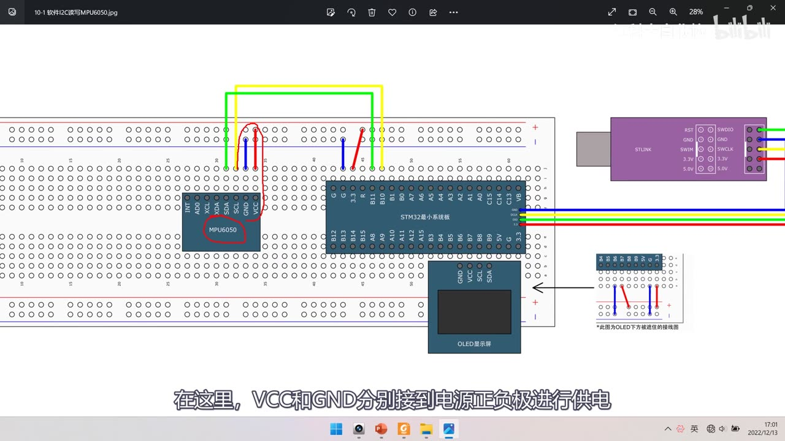
图 1：接线图 10-1 软件I2C读写MPU6050——左侧 MPU6050 模块（AD0/XCL/XDA/SDA/SCL/GND/VCC），中间 STM32 最小系统板（绿/黄飞线接到 PB10/PB11），下方 OLED，右上 ST-Link；字幕「在这里，VCC和GND分别接到电源正负极进行供电」
1.2 复制工程、建好分层框架
- 复制 OLED 显示工程，改名
10-1 软件I2C读写MPU6050，先编译； - 程序的整体架构（手绘三层）：main 应用层 → MPU6050 驱动层 → MyI2C 协议层；
- 在 Hardware 目录下新建文件（模块名加前缀防止和库函数重名）：先建 MyI2C.c / MyI2C.h，写 I2C 底层的 GPIO 初始化 + 6 个时序基本单元（起始、终止、发送字节、接收字节、发送应答、接收应答）；再建 MPU6050.c / MPU6050.h / MPU6050_Reg.h，基于 I2C 层实现指定地址写/读寄存器、配置、取数。
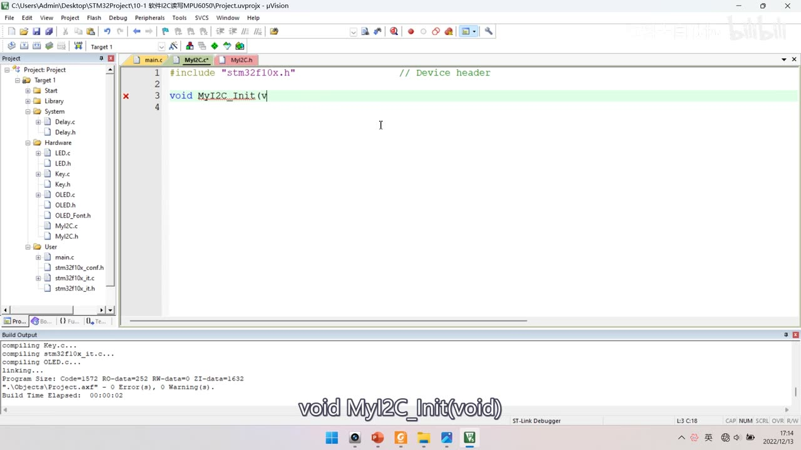
图 2：工程 10-1 软件I2C读写MPU6050 中新建 MyI2C.c——#include "stm32f10x.h" 后正在写 void MyI2C_Init(v；左侧 Hardware 组下已出现 MyI2C.c / MyI2C.h
2. MyI2C 协议层（软件模拟 I2C）
2.1 MyI2C_Init：开漏输出 + 释放总线
void MyI2C_Init(void)
{
RCC_APB2PeriphClockCmd(RCC_APB2Periph_GPIOB, ENABLE);
GPIO_InitTypeDef GPIO_InitStructure;
GPIO_InitStructure.GPIO_Mode = GPIO_Mode_Out_OD; /* 开漏输出 */
GPIO_InitStructure.GPIO_Pin = GPIO_Pin_10 | GPIO_Pin_11;
GPIO_InitStructure.GPIO_Speed = GPIO_Speed_50MHz;
GPIO_Init(GPIOB, &GPIO_InitStructure);
GPIO_SetBits(GPIOB, GPIO_Pin_10 | GPIO_Pin_11); /* 释放总线，置空闲高电平 */
}
- 两个任务：① 把 SCL/SDA 初始化为开漏输出模式；② 把 SCL/SDA 置高电平释放总线（此时 I2C 总线处于空闲状态）；
- 开漏输出虽然名字带「输出」，但兼具输入输出功能，而且输出高电平＝释放引脚，正好符合 I2C 的「线与 + 弱上拉」硬件规定；
- 初始化代码从
LED.c的 GPIO 初始化复制改：端口改 GPIOB、引脚改 Pin_10 | Pin_11、模式改 GPIO_Mode_Out_OD； GPIO_SetBits(...)这一行容易漏：不释放总线，后续时序会从错误电平开始。
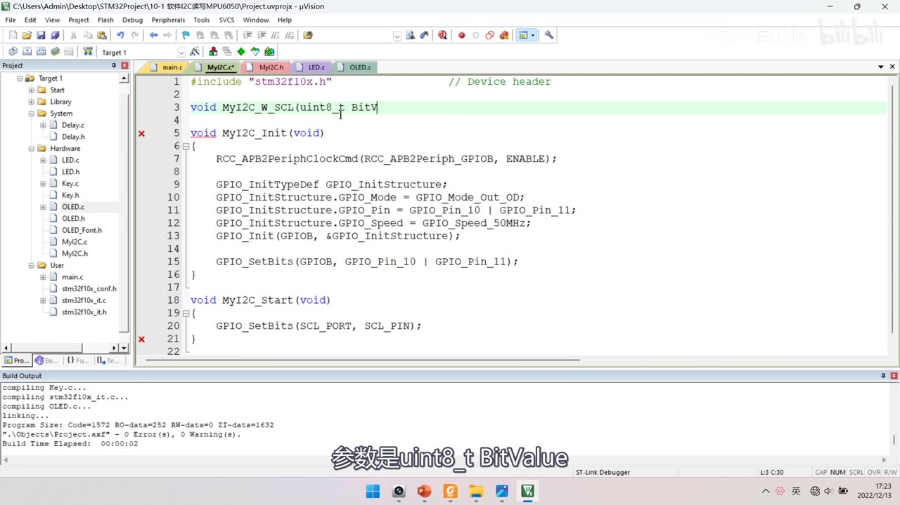
图 3：MyI2C.c 中的 MyI2C_Init（GPIO_Mode_Out_OD、GPIO_Pin_10 | GPIO_Pin_11、GPIO_Speed_50MHz、GPIO_Init(GPIOB, …)、GPIO_SetBits(GPIOB, GPIO_Pin_10 | GPIO_Pin_11)）；下方 MyI2C_Start 里还留着*宏写法 GPIO_SetBits(SCL_PORT, SCL_PIN);（红叉＝宏未定义，后面改成函数）；字幕「参数是uint8_t BitValue」*
2.2 三个底层函数：W_SCL / W_SDA / R_SDA
void MyI2C_W_SCL(uint8_t BitValue)
{
GPIO_WriteBit(GPIOB, GPIO_Pin_10, (BitAction)BitValue);
Delay_us(10);
}
/* W_SDA 同构：引脚换成 GPIO_Pin_11 */
void MyI2C_W_SDA(uint8_t BitValue)
{
GPIO_WriteBit(GPIOB, GPIO_Pin_11, (BitAction)BitValue);
Delay_us(10);
}
uint8_t MyI2C_R_SDA(void)
{
uint8_t BitValue;
BitValue = GPIO_ReadInputDataBit(GPIOB, GPIO_Pin_11);
Delay_us(10);
return BitValue;
}
- 为什么用函数封装而不是宏定义：直接用宏（
#define SCL_PORT GPIOB/#define SCL_PIN GPIO_Pin_10）或带参宏替换整个GPIO_WriteBit也是可行且常见的写法，但缺点明显——语义不明（看不出是置位还是复位）、换引脚要改动很多处、主频高的芯片需要加软件延时的时候不方便；所以作者选择定义函数，延时也方便加在函数里，移植到别的单片机只需改这几个函数； - 延时
Delay_us(10)：对 STM32F1 + MPU6050 来说，即使不加延时也能跟得上，但保险起见延时 10us（I2C 是同步时序，可以慢）；换更高主频的芯片时要按手册时序要求调整。
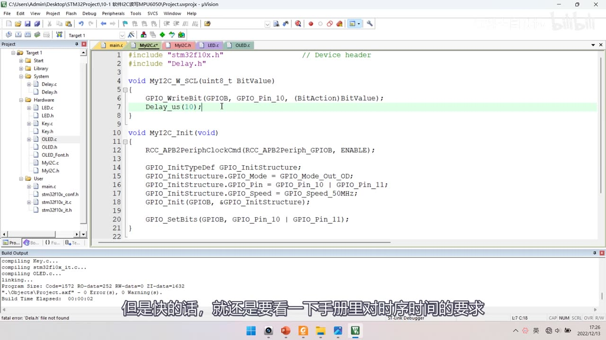
图 4：MyI2C.c 顶部——#include "Delay.h"；void MyI2C_W_SCL(uint8_t BitValue)：GPIO_WriteBit(GPIOB, GPIO_Pin_10, (BitAction)BitValue); + Delay_us(10);（高亮）；下方是 MyI2C_Init 全文（末行 GPIO_SetBits）；字幕「但是快的话，就还是要看一下手册里对时序时间的要求」
2.3 起始与终止
void MyI2C_Start(void)
{
MyI2C_W_SDA(1); /* 先释放 SDA，保证起始条件从高电平开始（保险） */
MyI2C_W_SCL(1);
MyI2C_W_SDA(0); /* SCL 高电平期间 SDA 下降沿 = 起始条件 */
MyI2C_W_SCL(0); /* 随后拉低 SCL，占用总线，便于时序拼接 */
}
void MyI2C_Stop(void)
{
MyI2C_W_SDA(0); /* 先拉低 SDA，为上升沿做准备 */
MyI2C_W_SCL(1);
MyI2C_W_SDA(1); /* SCL 高电平期间 SDA 上升沿 = 终止条件 */
}
- 起始：
SDA=1, SCL=1, SDA=0, SCL=0——先释放 SDA 是为了保险（起始条件要求 SCL 高电平期间 SDA 由高变低，若 SDA 原本是低电平就没法产生下降沿）；最后拉低 SCL 是占用总线且让每个时序单元「低电平开始、低电平结束」便于拼接； - 终止：
SDA=0, SCL=1, SDA=1——先拉低 SDA、释放 SCL 让它回高（此时 SCL 高、SDA 低），再释放 SDA 产生上升沿；结束之后 SCL/SDA 都回到高电平（空闲态）。
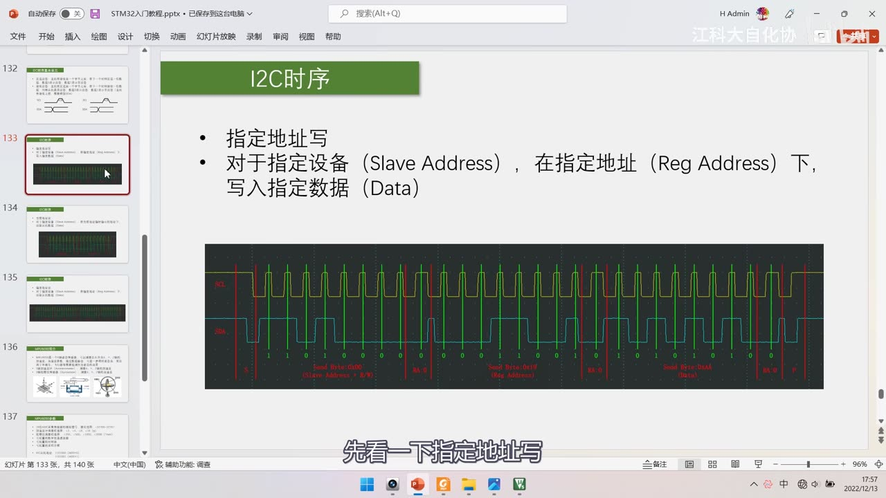
图 5：PPT「I2C时序」指定地址写页（上集内容，本集写代码时对照）——对于指定设备在指定地址下写入指定数据；下方是实测波形，标注 Send Byte: 0xD0 (Slave Address + R/W)、RA 0、Send Byte: 0x19 (Reg Address)、RA 0、Send Byte: 0xAA (Data)、RA 0、P；字幕「先看一下指定地址写」
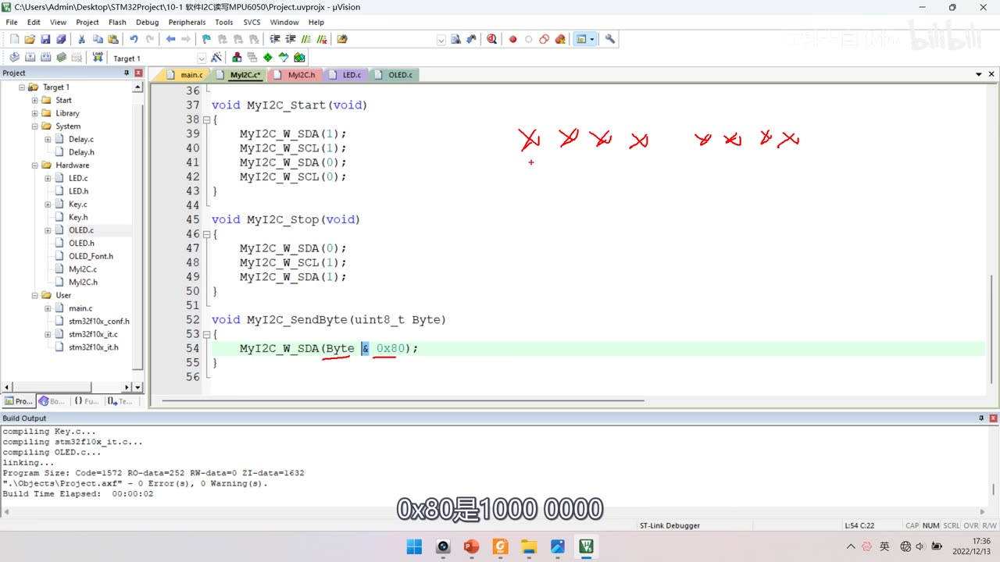
图 6：MyI2C_Start（W_SDA(1); W_SCL(1); W_SDA(0); W_SCL(0);）与 MyI2C_Stop（W_SDA(0); W_SCL(1); W_SDA(1);）完整，下方 MyI2C_SendByte 首行 MyI2C_W_SDA(Byte & 0x80);（红笔标注）；字幕「0x80是1000 0000」
2.4 发送一个字节（高位先行）
void MyI2C_SendByte(uint8_t Byte)
{
uint8_t i;
for (i = 0; i < 8; i ++)
{
MyI2C_W_SDA(Byte & (0x80 >> i)); /* 取第 i 位（从最高位开始），非 0 即 1 */
MyI2C_W_SCL(1); /* SCL 高电平：从机读取 */
MyI2C_W_SCL(0); /* SCL 低电平：允许换下一位数据 */
}
}
Byte & 0x80：0x80是二进制1000 0000，按位与的结果只取决于 Byte 的最高位——是 0 结果就是 0、是 1 结果非 0；因为W_SDA参数会赋给BitAction（非 0 即 1），可以直接把按位与的结果传进去（不放心也可以写if (Byte & 0x80) W_SDA(1); else W_SDA(0);）；- 第 i 次循环用
0x80 >> i：i=0取 B7、i=1取 B6 …… 高位先行；加括号确保优先级； - SCL 低电平期间放数据、高电平期间从机读数据——所以「改变 SDA」只能发生在低电平期间。
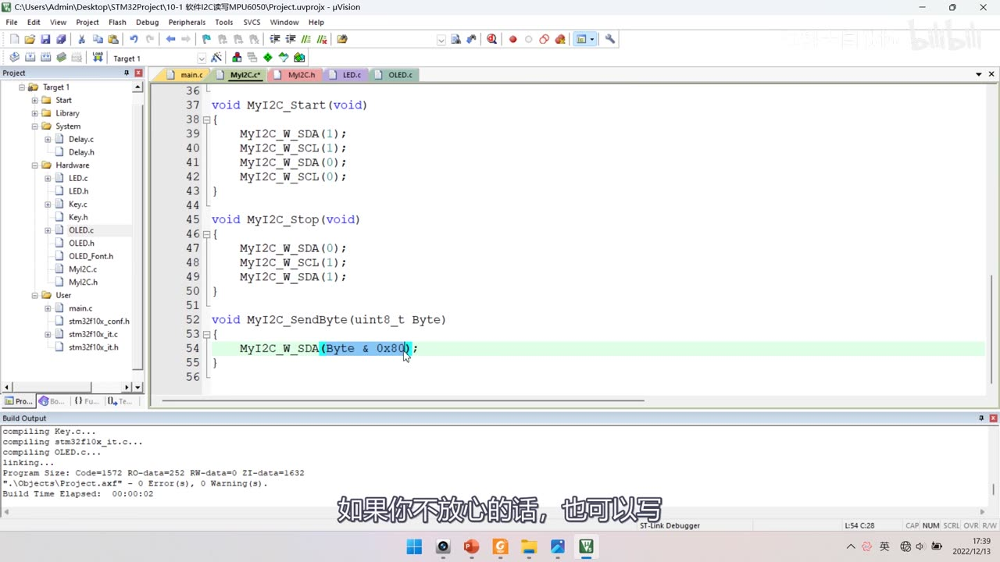
图 7：MyI2C_SendByte 首行高亮 MyI2C_W_SDA(Byte & 0x80);（准备改成 for 循环 + 0x80 >> i）；字幕「如果你不放心的话，也可以写」
2.5 接收一个字节
uint8_t MyI2C_ReceiveByte(void)
{
uint8_t Byte = 0x00;
uint8_t i;
MyI2C_W_SDA(1); /* 主机接收前必须释放 SDA */
for (i = 0; i < 8; i ++)
{
MyI2C_W_SCL(1); /* SCL 高电平：主机读取 */
if (MyI2C_R_SDA()) { Byte |= (0x80 >> i); }
MyI2C_W_SCL(0); /* SCL 低电平：从机换下一位数据 */
}
return Byte;
}
来源说明：接收字节的完整函数体没有落在任何一帧画面里，本代码块按口述（21:30–24:30）+ 发送字节的对称结构推导整理——逻辑是「先释放 SDA → 8 次（高电平读、低电平移）→ 用
0x80 >> i拼成字节」。
- 关键点 1：主机接收前必须先释放 SDA——否则线与把总线拽低，从机发什么主机都读成 0；
- 关键点 2：SCL 低电平＝从机「写」数据（变换电平）、高电平＝主机「读」数据——这种「读写分离」设计同时保证了起始/终止条件的特异性（数据位期间 SCL 高电平绝对不许动 SDA，只有起始/终止时 SCL 高电平期间 SDA 才允许跳变）；
- 答疑（作者原话意思）：for 循环里主机没写过 SDA，读出来为什么会有变化？ 因为I2C 是在通信，总线那边有从机——主机不断拨动 SCL 时钟，从机就有义务在低电平期间改变 SDA，所以主机读到的数据是从机控制的；如果主机自己写 SDA，那就不是通信了。
2.6 发送应答 / 接收应答
void MyI2C_SendAck(uint8_t AckBit)
{
MyI2C_W_SDA(AckBit); /* 主机把应答位放到 SDA（0=应答、1=非应答） */
MyI2C_W_SCL(1);
MyI2C_W_SCL(0);
}
uint8_t MyI2C_ReceiveAck(void)
{
uint8_t AckBit;
MyI2C_W_SDA(1); /* 主机先释放 SDA，交给从机应答 */
MyI2C_W_SCL(1);
AckBit = MyI2C_R_SDA(); /* 读应答位：0=从机应答、1=无应答 */
MyI2C_W_SCL(0);
return AckBit;
}
来源说明：这两个函数的完整函数体同样未逐行落帧，代码按口述（22:00–24:20）整理。
- 答疑：
ReceiveAck里主机W_SDA(1)之后，读到的值仍然可能是 0——因为 I2C 引脚是「开漏输出 + 弱上拉」，主机置 1 只是「放手」，从机可以把线拉低：读到 0 = 从机应答（ACK）、读到 1 = 没人应答（NACK）。
3. 先验证时序：点名测试与 AD0 改名
3.1 「点名」时序
OLED_Init();
MyI2C_Init();
MyI2C_Start();
MyI2C_SendByte(0xD0); // 1101 000 0：从机地址 + 写
uint8_t Ack = MyI2C_ReceiveAck();
MyI2C_Stop();
OLED_ShowNum(1, 1, Ack, 3); // 显示应答位
- 不急着写上层，先用这条最短的指定地址写「半截」时序（只发地址、不写数据）验证底层时序和接线是否正确；
- 0xD0 = 1101 0000：高 7 位是 MPU6050 地址 1101000，最低位 0 表示写；
- 下载后 OLED 显示 0（MPU6050 给了应答），说明硬件接线和时序都没问题；这就是「点名」——「就是看看你这个人在不在」。
3.2 寻址改错 → 无应答；AD0 改名实验
- 把寻址改成 0xA0（总线上没这个设备）→ OLED 显示 1（无应答）——符合预期；利用这个「点名」时序可以做从机地址扫描（for 循环遍历所有地址、把应答位为 0 的记下来）；
- AD0 改名实验：把 AD0 飞线接高电平 → 用新名字 1101001（0xD2 写 / 0xD3 读） 才叫得应，改回 0xD0 又「不理人」；
- 结论：同一条总线挂多个同型号芯片时，可以靠 AD0 改地址避免冲突；本芯片只有 AD0 一个（2 个地址），若有 AD0+AD1 可有 4 个地址。
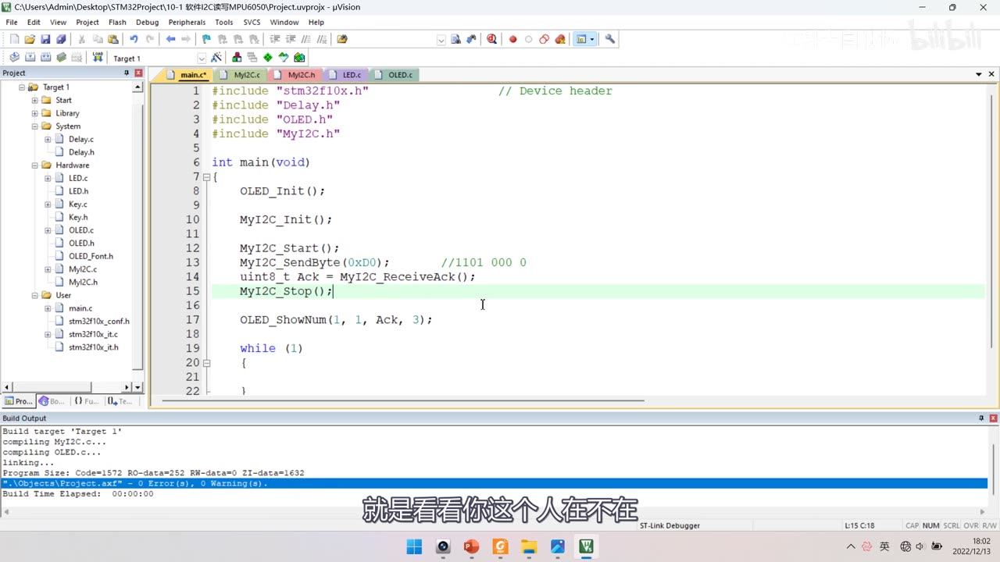
图 8：main「点名」测试——OLED_Init(); MyI2C_Init();、MyI2C_Start();、MyI2C_SendByte(0xD0); // 1101 000 0、uint8_t Ack = MyI2C_ReceiveAck();、MyI2C_Stop();、OLED_ShowNum(1, 1, Ack, 3);；字幕「就是看看你这个人在不在」
4. MPU6050 驱动层
4.1 新建模块
- 在 Hardware 下新建 MPU6050.c / MPU6050.h（建立在 MyI2C 之上，像类继承：
#include "MyI2C.h"，MPU6050_Init里先调MyI2C_Init()）； - 再新建 MPU6050_Reg.h 存寄存器地址宏定义（免得每次查手册；本集确认用到的宏名见存疑）；
#define MPU6050_ADDRESS 0xD0（把从机地址宏定义，方便改、也突出这是从机地址）。
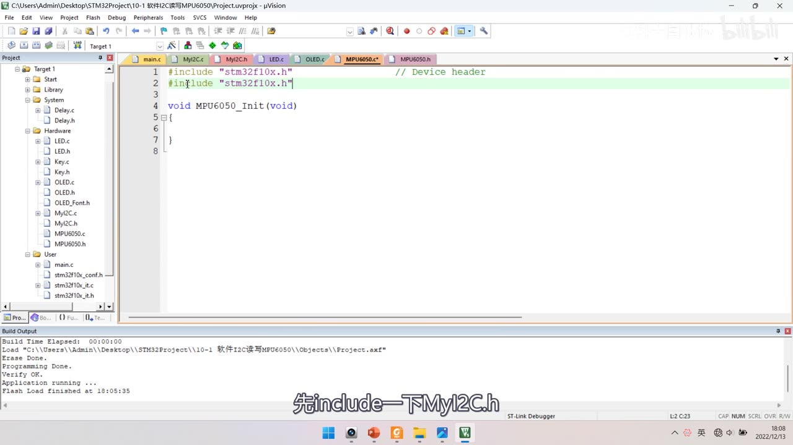
图 9：新建 MPU6050.c（#include "stm32f10x.h"、空的 void MPU6050_Init(void)）；工程 Hardware 组下已有 MyI2C.c/h、MPU6050.c/h；字幕「先include一下MyI2C.h」
4.2 写寄存器 MPU6050_WriteReg
#include "MyI2C.h"
#define MPU6050_ADDRESS 0xD0
void MPU6050_WriteReg(uint8_t RegAddress, uint8_t Data)
{
MyI2C_Start();
MyI2C_SendByte(MPU6050_ADDRESS); /* 从机地址 + 写 */
MyI2C_ReceiveAck();
MyI2C_SendByte(RegAddress); /* 寄存器地址 */
MyI2C_ReceiveAck();
MyI2C_SendByte(Data); /* 写入的数据 */
MyI2C_ReceiveAck();
MyI2C_Stop();
}
- 完整对应 P31 的「指定地址写」时序：
S → 地址+W → RA → 寄存器地址 → RA → 数据 → RA → P； - 每个字节后都调
ReceiveAck()收应答，但本函数没有对返回值做判断——「如果展开写会增加很多代码，为了保证时序结构清晰，这里就不判断了」；需要时可以在接收应答处加判断； - 进阶（本集未实现）：指定地址写多个字节就是把「发送一个字节 + 接收应答」用 for 循环重复、把数组各字节依次发出——作者只提了思路、留作课后练习。
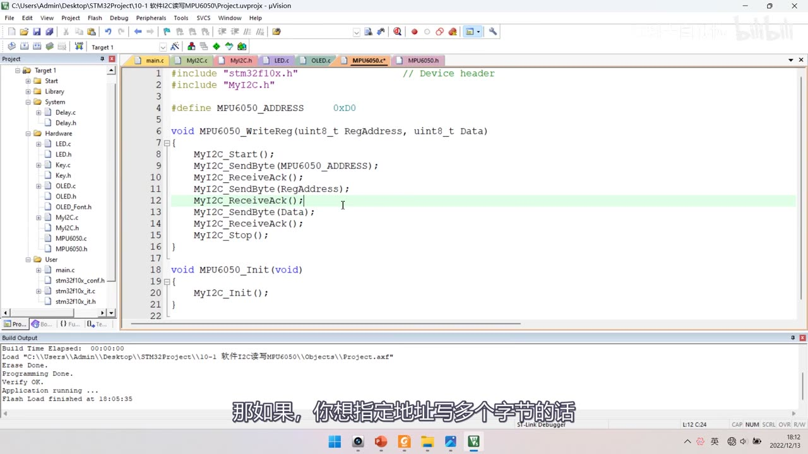
图 10：MPU6050.c——#include "MyI2C.h"、#define MPU6050_ADDRESS 0xD0，void MPU6050_WriteReg(uint8_t RegAddress, uint8_t Data) 完整九行（Start → SendByte(MPU6050_ADDRESS) → ReceiveAck → SendByte(RegAddress) → ReceiveAck（高亮）→ SendByte(Data) → ReceiveAck → Stop）；下方是 MPU6050_Init 开头 MyI2C_Init();；字幕「那如果，你想指定地址写多个字节的话」
4.3 读寄存器 MPU6050_ReadReg
uint8_t MPU6050_ReadReg(uint8_t RegAddress)
{
uint8_t Data;
MyI2C_Start();
MyI2C_SendByte(MPU6050_ADDRESS); /* 先写：只指定寄存器地址 */
MyI2C_ReceiveAck();
MyI2C_SendByte(RegAddress);
MyI2C_ReceiveAck();
MyI2C_Start(); /* 重复起始 Sr：切换读写方向 */
MyI2C_SendByte(MPU6050_ADDRESS | 0x01); /* 地址 + 读 = 0xD1 */
MyI2C_ReceiveAck();
Data = MyI2C_ReceiveByte();
MyI2C_SendAck(1); /* 最后一个字节给非应答 */
MyI2C_Stop();
return Data;
}
- 前半段和
WriteReg一模一样（只指定地址、还没有写数据）；设置完地址后要转入读时序，就必须重新发起始条件、重新指定读写位——这就是 P31 讲的 Sr（重复起始）； MPU6050_ADDRESS | 0x01：0xD0 是写地址，或上 1 变成 0xD1（读）；- 接收完一个字节后必须给非应答
SendAck(1)：本集只读 1 个字节，不给非应答从机就会以为主机还要、继续占用 SDA，之后 Stop 可能产生不了；要连续读多个字节时，前面都给应答、最后一个给非应答； - 进阶（本集未实现）：用 for 循环把「接收字节 + 发送应答」重复，可以连续读多个寄存器（例如从 0x3B 起连续读 14 个字节一次取完 6 轴数据，更高效）——作者只提了思路、留作课后练习。
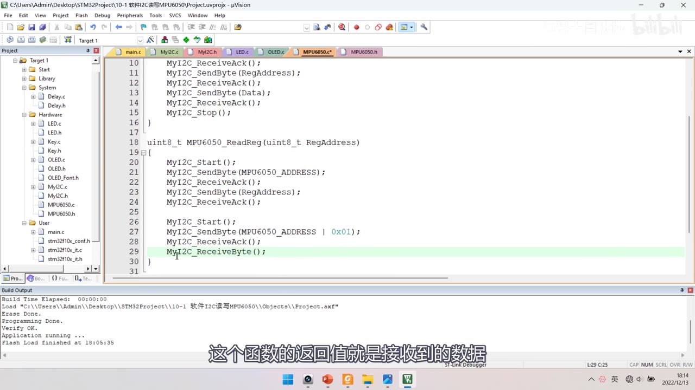
*图 11：MPU6050_ReadReg(uint8_t RegAddress) 完整——MyI2C_Start(); SendByte(MPU6050_ADDRESS); ReceiveAck(); SendByte(RegAddress); ReceiveAck(); 然后空行 MyI2C_Start();（重复起始）、SendByte(MPU6050_ADDRESS | 0x01); ReceiveAck(); MyI2C_ReceiveByte();（高亮）；字幕「这个函数的返回值就是接收到的数据」*
4.4 验证读写寄存器
OLED_Init();
MPU6050_Init();
MPU6050_WriteReg(0x6B, 0x00); /* PWR_MGMT_1：解除睡眠 */
MPU6050_WriteReg(0x19, 0xAA); /* SMPLRT_DIV：写入测试值 */
uint8_t ID = MPU6050_ReadReg(0x75); /* WHO_AM_I */
OLED_ShowHexNum(1, 1, ID, 2);
- 先写 PWR_MGMT_1(0x6B) = 0x00 解除睡眠——芯片上电默认是睡眠模式，睡眠模式下写其它寄存器是无效的（这是本集第一个要记住的坑）；
- 再往 0x19（SMPLRT_DIV）写 0xAA，然后读 0x19 验证，读回 0xAA；改成写 0x66 读回 0x66 → 读写寄存器都正常；
- 读 WHO_AM_I(0x75) = 0x68，说明指定地址读通信正常；作者提到有的模块 ID 读出是 0x98（网上没查到原因，不影响使用）。
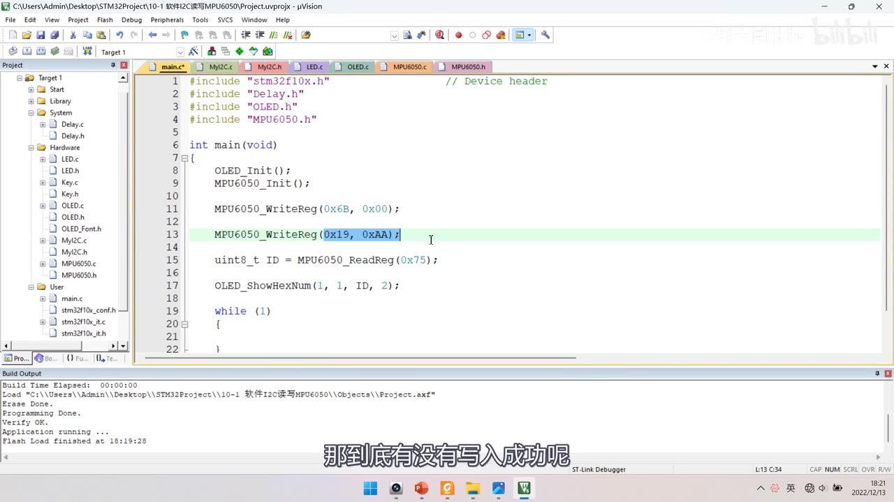
图 12：main 读写验证——OLED_Init(); MPU6050_Init();、MPU6050_WriteReg(0x6B, 0x00);、MPU6050_WriteReg(0x19, 0xAA);（高亮）、uint8_t ID = MPU6050_ReadReg(0x75);、OLED_ShowHexNum(1, 1, ID, 2);；字幕「那到底有没有写入成功呢」
5. MPU6050_Init 与 MPU6050_GetData
5.1 初始化配置六条
void MPU6050_Init(void)
{
MyI2C_Init(); /* 底层初始化 */
MPU6050_WriteReg(MPU6050_PWR_MGMT_1, 0x01); /* 解睡 + 时钟选陀螺 PLL */
MPU6050_WriteReg(MPU6050_PWR_MGMT_2, 0x00); /* 各轴不待机 */
MPU6050_WriteReg(MPU6050_SMPLRT_DIV, 0x09); /* 采样率分频 */
MPU6050_WriteReg(MPU6050_CONFIG, 0x06); /* 数字低通滤波 */
MPU6050_WriteReg(MPU6050_GYRO_CONFIG, 0x18); /* 陀螺 ±2000°/s */
MPU6050_WriteReg(MPU6050_ACCEL_CONFIG, 0x18); /* 加速度 ±16g */
}
| 寄存器 | 值 | 含义 |
|---|---|---|
| PWR_MGMT_1 | 0x01 | 清 SLEEP（解除睡眠）+ CLKSEL = 1（选 X 轴陀螺 PLL 作时钟源；上集讲过强烈建议用陀螺晶振） |
| PWR_MGMT_2 | 0x00 | 低 6 位全 0 → 六轴都不进入待机 |
| SMPLRT_DIV | 0x09 | 采样分频：值越小采样越快（按实际需求调） |
| CONFIG | 0x06 | EXT_SYNC 全 0（不用外部同步）+ DLPF_CFG = 6（开数字低通滤波，输出更平滑） |
| GYRO_CONFIG | 0x18 | 自测位全 0 + FS_SEL = 3 → ±2000 °/s |
| ACCEL_CONFIG | 0x18 | 自测位全 0 + AFS_SEL = 3 → ±16 g（高通滤波位为 0） |
- 寄存器宏名来自
MPU6050_Reg.h；每一位的含义按 P32 手册总结：0x18 =0001 1000→ 自测位 0、满量程选择位 11；0x01 =0000 0001→ 解睡 + 时钟源 1。
5.2 MPU6050_GetData：指针返回 6 个值
void MPU6050_GetData(int16_t *AccX, int16_t *AccY, int16_t *AccZ,
int16_t *GyroX, int16_t *GyroY, int16_t *GyroZ)
{
uint8_t DataH, DataL;
DataH = MPU6050_ReadReg(MPU6050_ACCEL_XOUT_H);
DataL = MPU6050_ReadReg(MPU6050_ACCEL_XOUT_L);
*AccX = (DataH << 8) | DataL;
/* Y/Z 轴、以及 GYRO_X/Y/Z 同理：各自读 _H 与 _L，再 (DataH << 8) | DataL */
...
}
- 多返回值的方法：① 全局变量（简单直接，但不利于封装）② 指针传地址（本集用） ③ 把多个变量打包成结构体统一返回（更高阶）——「指针教程里讲过」；
- 读法：每个轴的高字节
_H、低字节_L分别读出来，(DataH << 8) | DataL拼成 16 位，再通过指针写回主函数的变量； - 答疑：
DataH是uint8_t，左移 8 位会不会把高位丢掉？——最终赋值的目标是int16_t变量，移出去的位并不会丢失（手册说明数据是 16 位补码），实测没问题；不放心可以把两个局部变量改成 16 位类型。
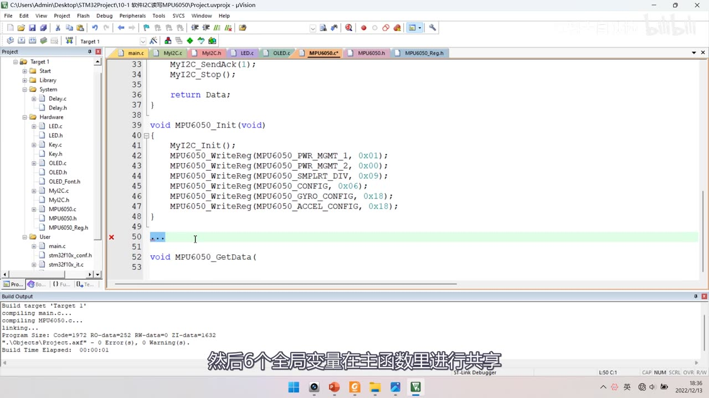
图 13：MPU6050_Init 完整七行（MyI2C_Init(); + MPU6050_WriteReg(MPU6050_PWR_MGMT_1, 0x01); PWR_MGMT_2, 0x00; SMPLRT_DIV, 0x09; CONFIG, 0x06; GYRO_CONFIG, 0x18; ACCEL_CONFIG, 0x18）；下方 void MPU6050_GetData( 起始；字幕「然后6个全局变量在主函数里进行共享」
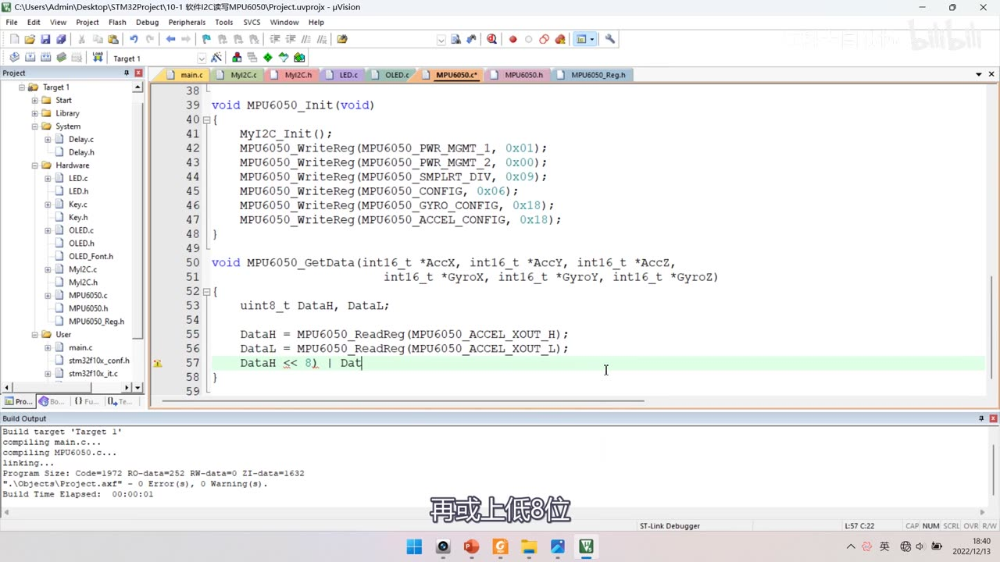
图 14：void MPU6050_GetData(int16_t *AccX, int16_t *AccY, int16_t *AccZ, int16_t *GyroX, int16_t *GyroY, int16_t *GyroZ)；函数体 uint8_t DataH, DataL;、DataH = MPU6050_ReadReg(MPU6050_ACCEL_XOUT_H);、DataL = MPU6050_ReadReg(MPU6050_ACCEL_XOUT_L);，正在输入 DataH << 8 | Dat…（高亮）；字幕「再或上低8位」
6. main 与实验现象
#include "stm32f10x.h"
#include "Delay.h"
#include "OLED.h"
#include "MPU6050.h"
uint8_t ID;
int16_t AX, AY, AZ, GX, GY, GZ;
int main(void)
{
OLED_Init();
MPU6050_Init();
OLED_ShowString(1, 1, "ID:");
ID = MPU6050_GetID();
OLED_ShowHexNum(1, 4, ID, 2);
while (1)
{
MPU6050_GetData(&AX, &AY, &AZ, &GX, &GY, &GZ);
OLED_ShowSignedNum(2, 1, AX, 5);
OLED_ShowSignedNum(3, 1, AY, 5);
/* 后续几行同理显示 AZ、GX、GY、GZ */
}
}
MPU6050_GetID()是最后补的小函数：return MPU6050_ReadReg(MPU6050_WHO_AM_I);——把 WHO_AM_I 的读法封装起来；- main 里定义
int16_t AX, AY, AZ, GX, GY, GZ;，循环里传地址给GetData，再用OLED_ShowSignedNum（有符号数显示） 分三行两列显示（2 行 1 列 AX、3 行 1 列 AY ……）。
现象：
- ID 显示
0x68（十六进制 68）； - 芯片水平放置时：AX≈+122、AY≈−15（GX≈−18，都不是精确的 0、有零偏）；AZ≈1944——按比例换算
1944/32768 = x/16g→ x ≈ 0.95g（标准应是 1g，误差正常），说明加速度测量基本正确； - 倾斜：X 轴方向倾斜时加速度的 Z 分量与另一面同时受力（数据变化）；把芯片翻过来（Z 轴朝下）→ 让 Z 轴输出负值；
- 转动：右侧三个是角速度，绕各轴转动时对应数值变化；具体角速度同样按
读数/32768 = x/满量程换算。
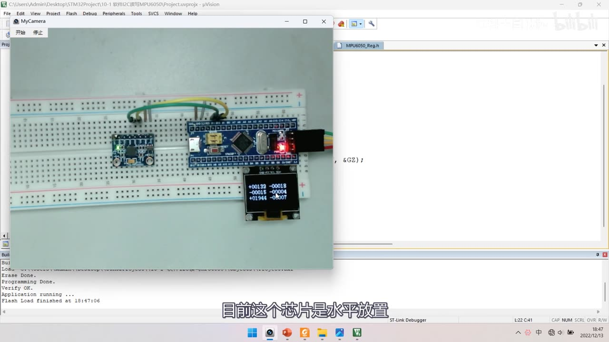
图 15：实验现象——面包板上 MPU6050 + STM32 + OLED 全貌，OLED 显示三行有符号数 +00122 -00018 / -00015 -00004 / +01944 -00007；字幕「目前这个芯片是水平放置」
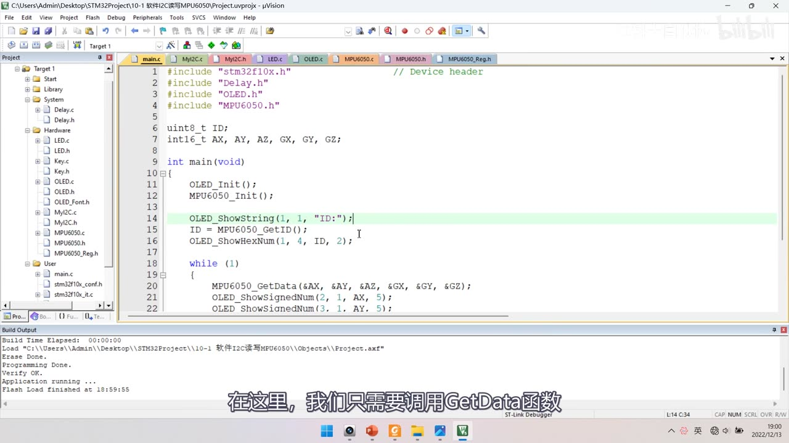
图 16：main 完整——uint8_t ID; int16_t AX, AY, AZ, GX, GY, GZ;、OLED_Init(); MPU6050_Init();、OLED_ShowString(1, 1, "ID:");（高亮）、ID = MPU6050_GetID();、OLED_ShowHexNum(1, 4, ID, 2);，while 里 MPU6050_GetData(&AX, &AY, &AZ, &GX, &GY, &GZ);、OLED_ShowSignedNum(2, 1, AX, 5);、OLED_ShowSignedNum(3, 1, AY, 5);；字幕「在这里，我们只需要调用GetData函数」
7. 分层架构总结
- 最底层：I2C 协议层（MyI2C）——引脚是哪两个、什么配置、时序怎么写，这些「协议相关」的内容都在这一层；
- 中间层：MPU6050 驱动层——主要关注如何读写寄存器、怎么配置寄存器、怎么读取数据，这些「驱动相关」的内容；
- 最上层：应用层（main）——只需要调用
MPU6050_GetData这样的函数，关注点放在自己的功能设计上； - 分层的意义：每层只专注自己的事、其他层的事情不需要管；移植时只改对应层（换引脚/换单片机改协议层、换传感器改驱动层），代码好管理、好复用。
坑与易错点
- SCL/SDA 接 PB10/PB11（本集），别和串口的 PA9/PA10 混；软件 I2C 引脚可以任意指定，但要和代码里的
GPIO_Pin_x一致。 - GPIO 必须配成开漏输出
GPIO_Mode_Out_OD：I2C 靠开漏 + 上拉做线与，配推挽会出问题。 - 初始化最后要
GPIO_SetBits释放总线：不置高，总线起始电平就不对。 - 延时
Delay_us(10)是经验值：F1 不加也能跑，但换高主频芯片要按手册时序调。 - 起始条件前先
W_SDA(1)：否则 SDA 本来就是低电平，产生不了下降沿。 - 高位先行：
Byte & (0x80 >> i)从 B7 到 B0；这与串口低位先行相反。 - 读字节/读应答前必须先释放 SDA（
W_SDA(1)）：否则线与把总线拽低、从机发不出来。 - 应答 0 = ACK、1 = NACK：主机置 1 后仍可能读到 0，因为从机可以把线拉低。
- 读寄存器要用重复起始（Sr）：读写方向只能在起始条件后指定，所以必须
Start() → 地址|0x01。 - 读最后 1 个字节必须给非应答
SendAck(1)：否则从机继续发、SDA 被占，Stop 可能不生效。 - 写寄存器前先解除睡眠：
WriteReg(PWR_MGMT_1, 0x00)（或 0x01），否则所有写操作无效——最容易卡住的坑。 DataH << 8 | DataL要拼成 int16 有符号值；uint8_t移位后再赋给 int16 不丢位（不放心就用 16 位中间变量）。- 现象不是精确 0/1g：AX≈+122 有零偏、AZ≈1944≈0.95g——传感器有误差、安装也有偏差，属正常。
- 多字节读写本集没写代码：写多字节、读 0x3B 起连续 14 字节都只提了思路（作者留作课后练习），需要自己扩展。
时间轴
| 时间 | 内容 |
|---|---|
| 0:02 | 本小节学习 MPU6050 的代码部分 |
| 0:08 | 代码分两部分：软件 I2C 时序 + 读写寄存器操控 MPU6050 |
| 0:22 | 先看硬件电路，打开接线图 10-1 |
| 0:34 | VCC 和 GND 分别接到电源正负极供电 |
| 0:39 | SCL 引到 STM32 的 PB10 引脚 |
| 0:44 | SDA 引到 PB11 引脚 |
| 0:47 | 这套代码用软件 I2C，不占内部外设资源 |
| 0:58 | 所以端口可以任意指定，不局限这两个 |
| 1:02 | 也可以 SCL 接 PA0 或 PA8 |
| 1:19 | 这就是软件 I2C 相比硬件 I2C 的优点：端口不受限 |
| 1:27 | 按 I2C 硬件规定 SCL/SDA 应接上拉电阻 |
| 1:33 | 但这里没有外挂，因为模块内部自带 |
| 1:44 | STM32 是主机、MPU6050 是从机的一主一从模型 |
| 1:53 | 一般只关注主机端程序 |
| 2:01 | AD0 引脚可修改从机地址最低位，后面会试 |
| 2:07 | 模块内置下拉电阻，引脚悬空时地址固定 |
| 2:21 | 接下来看面包板接线 |
| 2:24 | 拿出 MPU6050 模块插在面包板上 |
| 2:35 | 用跳线接电源：VCC 接正极、GND 接负极 |
| 2:42 | 用飞线接通信引脚：SCL 接 PB10、SDA 接 PB11 |
| 2:54 | 接线完成，插上 ST-Link |
| 2:58 | 模块上的电源指示灯亮起，说明供电正常 |
| 3:11 | 回到工程文件夹，复制 OLED 显示屏工程 |
| 3:18 | 改名 10-1 软件 I2C 读写 MPU6050 |
| 3:35 | 先编译一下 |
| 3:45 | 程序分两部分：先建 I2C 通信层 .c/.h |
| 3:58 | 写好底层 GPIO 初始化和 6 个时序基本单元 |
| 4:08 | 再建 MPU6050 的 .c/.h 模块 |
| 4:16 | 基于 I2C 层实现指定地址读写寄存器 |
| 4:27 | 这就是程序的整体架构 |
| 4:41 | 开始写程序，先在 Hardware 下加文件 |
| 4:53 | 防止和库函数重名，加前缀 |
| 4:58 | 初始化函数 void MyI2C_Init(void) |
| 5:13 | 库里只需要用 GPIO 的读写函数 |
| 5:27 | 两个任务：把 SCL/SDA 配成开漏输出 |
| 5:34 | 第二个任务：把 SCL/SDA 置高电平 |
| 5:37 | 打开 LED.c 的 GPIO 初始化代码复制 |
| 5:50 | 端口改成 GPIOB |
| 5:58 | 都要配置成开漏输出模式 |
| 6:18 | 输出高电平即释放引脚，开漏兼具输入输出 |
| 6:35 | 最后释放总线，此时总线空闲、SCL/SDA 都是高电平 |
| 7:00 | 接下来完成 6 个时序基本单元 |
| 7:17 | void MyI2C_Start(void) |
| 7:35 | 可以用 SetBits/ResetBits 手动翻转电平 |
| 7:41 | 但这样语义不明显，换引脚要改很多地方 |
| 7:55 | 所以先在上面做宏定义 |
| 8:06 | 常见做法：用宏定义端口名称 |
| 8:22 | 如 #define SCL_PORT GPIOB、SCL_PIN GPIO_Pin_10 |
| 8:31 | 语义明确，换引脚只改一处 |
| 8:48 | 进一步还可以把整个函数用宏定义替换 |
| 9:06 | 有参宏替换后等效于直接展开函数调用 |
| 10:04 | 但很多人不知道这种宏怎么改 |
| 10:17 | 主频很高的芯片要加延时时，宏也不方便 |
| 10:28 | 综合这些缺点，作者直接定义函数 |
| 10:42 | void MyI2C_W_SCL(uint8_t BitValue) |
| 10:56 | 里面 GPIO_WriteBit(GPIOB, GPIO_Pin_10, (BitAction)BitValue) |
| 11:19 | 之后调用它可以释放或拉低 SCL |
| 11:33 | 想加延时就在函数里 include Delay.h |
| 11:55 | Delay_us(10)：对 F1 + MPU6050 不加也能跟上 |
| 12:10 | 保险起见延时 10us，I2C 可以慢 |
| 12:28 | 把 SDA 也这样封装 |
| 12:53 | 再写读 SDA 的函数 uint8_t MyI2C_R_SDA(void) |
| 13:10 | 读取后也延时 10us，return BitValue |
| 13:25 | 有了这三个函数封装，以后好改延时、好移植 |
| 13:50 | 继续写程序 |
| 14:03 | 起始条件：先释放 SDA 放在前面，保险 |
| 14:29 | SCL 低电平时 SDA 电平不确定，先拉高 SDA |
| 15:05 | 之后 SDA 和 SCL 都是高电平 |
| 15:10 | 接下来写 void MyI2C_Stop(void) |
| 15:20 | 终止条件：先拉低 SDA，再释放 SCL，再释放 SDA |
| 15:58 | 开始写发送字节 void MyI2C_SendByte |
| 16:09 | 发送时 SCL 以高电平结束，所有单元保证低进低出 |
| 16:29 | 发送数据时先放最高位，最后最低位 |
| 17:02 | 用 Byte & 0x80 判断最高位是 0 还是 1 |
| 17:12 | 0x80 是 1000 0000，按位与结果取决于最高位 |
| 18:20 | 不放心可以 if (Byte & 0x80) 写成 1 / 0 |
| 18:40 | 放好数据后释放 SCL，驱动时钟前进 |
| 18:55 | 从机在高电平期间读走数据 |
| 19:04 | 然后换下一位，套 for 循环迭代 8 次 |
| 19:38 | 通式是 Byte & (0x80 >> i)，加括号保证优先级 |
| 20:09 | 接着写接收 void MyI2C_ReceiveByte(void) |
| 20:20 | 接收时从机把数据放到 SDA 上 |
| 20:43 | 主机必须先释放 SDA，防止干扰从机 |
| 21:01 | 从机想发 1 就放手、想发 0 就拉低 |
| 21:12 | 主机在高电平期间读取 |
| 21:26 | 所以低电平是「写」时间、高电平是「读」时间 |
| 21:44 | 这也保证了起始/终止条件的特异性 |
| 22:05 | 回到程序：读 SDA 为 1 则 Byte 或上 0x80>>i |
| 23:18 | 循环 8 次，依次从高位到低位判断，最后 return |
| 23:58 | 然后是发送应答和接收应答 |
| 24:08 | 发送应答就是发 1 位，接收应答就是收 1 位 |
| 24:32 | SendAck 参数 AckBit：把 for 循环去掉、改成一位 |
| 24:45 | 主机把 AckBit 放到 SDA，从机读取应答 |
| 25:24 | ReceiveAck：同样去掉 for 循环，读一位返回 |
| 25:50 | 答疑：主机置 1 后为什么还能读到 0 |
| 26:05 | 因为 I2C 引脚是开漏 + 弱上拉，从机可以把线拉低 |
| 26:20 | 读到 0 代表从机应答、1 代表没应答 |
| 26:31 | 答疑：接收字节里主机没写 SDA，读出来为什么会变 |
| 27:05 | 因为主机拨动 SCL 时钟，从机有义务改变 SDA |
| 27:20 | 先编译一下这些底层时序 |
| 27:45 | 写 MyI2C 头文件，声明函数 |
| 28:05 | 测试方法：按指定地址写的时序结构走一遍 |
| 28:19 | 调用 MyI2C_Start 产生起始条件 |
| 28:37 | 起始后必须发送从机地址 + 读写位 0xD0 |
| 28:42 | 0xD0 的二进制是 1101 0000，最低位 0 表示写 |
| 29:00 | 之后接收应答，看从机有没有收到 |
| 29:20 | 这个芯片上电默认睡眠，睡眠时写寄存器无效 |
| 29:40 | 所以完整时序先不写，先只测应答位 |
| 30:04 | 直接 MyI2C_Stop 停止，用 OLED 显示 Ack |
| 30:30 | 这就是测试从机给不给应答的「点名」时序 |
| 30:40 | 主机寻址「你在不在」，不说什么事 |
| 30:48 | 这个精简时序可以看作点名 |
| 31:00 | 编译下载，OLED 显示 0，说明从机应答 |
| 31:30 | 把寻址改成 0xA0，总线上没这个设备 |
| 31:45 | 再下载，应答位显示 1，符合预期 |
| 32:00 | 所以可以用点名的时序做从机地址扫描 |
| 32:38 | 把寻址改回 0xD0，下载看应答为 0 |
| 33:05 | 飞线给 AD0 改从机地址 |
| 33:22 | 用原来的名字 1101000 叫它 |
| 33:32 | 修改寻址，用新名字 1101001 去叫 |
| 33:42 | 改名之后用新名字才叫得应 |
| 33:52 | 改回 0xD0 它又理人了，这就是改名实验 |
| 34:00 | 本芯片只有 AD0；如果有 AD0 和 AD1 可以有 4 个地址 |
| 34:10 | 一条总线挂多个同型号设备时靠改地址避免冲突 |
| 34:30 | 现在已验证 I2C 时序和接线都没问题 |
| 34:47 | 在 MyI2C 之上新建 MPU6050 模块 |
| 35:00 | 先写初始化函数 void MPU6050_Init(void) |
| 35:05 | 这个模块建立在 MyI2C 之上，要包含底层函数 |
| 35:21 | 初始化时先把底层初始化，有点像类继承 |
| 35:30 | 然后封装指定地址写和指定地址读 |
| 35:48 | 参数是 8 位寄存器地址和 8 位数据 |
| 35:58 | MyI2C_Start，然后发送 0xD0 从机地址 |
| 36:15 | 用宏定义替换从机地址，突出它是地址 |
| 36:23 | 发送从机地址之后接收应答 |
| 36:35 | 如果没应答可以在这里判断，但会展开很多代码 |
| 36:48 | 为保证时序结构清晰，这里不判断返回值 |
| 37:05 | 继续发送寄存器地址、接收应答 |
| 37:20 | 再发第三个字节数据、接收应答，然后 Stop |
| 37:35 | 对照 PPT 时序，和代码流程一致 |
| 37:50 | 想写多个字节就用 for 循环发数组，留作课后练习 |
| 38:10 | 接着写指定地址读 MPU6050_ReadReg |
| 38:30 | 前半段和写一样：设置地址、还没写数据 |
| 38:50 | 设置完地址要转入读，必须重新指定读写位 |
| 39:05 | 再来一个起始，指定从机地址并或上 0x01 |
| 39:20 | 别忘了还是要先接收应答 |
| 39:30 | 然后调用 MyI2C_ReceiveByte 接收字节 |
| 39:50 | 读完后要给从机发非应答，然后 Stop |
| 40:10 | 想连续读多个字节就前面给应答、最后给非应答 |
| 40:35 | 连续读也可以用 for 循环，留作课后练习 |
| 41:05 | 把三个函数放头文件声明，编译没问题 |
| 41:15 | 回主函数，先调 MPU6050_Init |
| 41:30 | 用 WHO_AM_I(0x75) 读 ID 验证通信 |
| 41:50 | 下载看，读出 ID 是 0x68，说明指定地址读正常 |
| 42:15 | 有的芯片 ID 是 0x98，作者网上没查到原因 |
| 42:35 | 再验证写寄存器：先解除睡眠 |
| 42:45 | 写 0x6B 寄存器为 0x00 解除睡眠 |
| 42:58 | 再往 0x19 写 0xAA |
| 43:06 | 再读 0x19，读回 0xAA，说明读写都正常 |
| 43:20 | 改成写 0x66 读回 0x66 |
| 43:35 | 其实这个程序是把 MPU6050 当存储器在读 |
| 43:55 | 但寄存器能和外设硬件互动，和普通存储器不同 |
| 44:10 | 删掉测试代码，继续写模块程序 |
| 44:25 | 初始化之后要对硬件电路进行配置 |
| 44:35 | 用宏定义寄存器地址，免得每次查手册 |
| 44:50 | 新建 MPU6050_Reg.h 存寄存器地址宏 |
| 45:05 | 把每个寄存器的名称和地址宏定义进来 |
| 45:20 | 比如电源管理寄存器 1 对应 0x6B |
| 45:40 | 有了定义就可以在这里引用 |
| 45:50 | 先配置电源管理寄存器 1：设备复位 0、睡眠 0 |
| 46:00 | 循环模式 0、温度传感器失能 0 |
| 46:10 | 最后 3 位选时钟，选陀螺 PLL 即 001 |
| 46:30 | 所以 PWR_MGMT_1 写入 0x01 |
| 46:40 | 再配置电源管理寄存器 2：全 0 即 0x00 |
| 46:55 | 配置采样率分频寄存器 0x19，值越小越快 |
| 47:10 | 配置 CONFIG：外部同步 0、低通滤波按需求 |
| 47:25 | 所以 CONFIG 写入 0x06 |
| 47:40 | GYRO_CONFIG：自测 0、满量程 11 即 ±2000 |
| 47:55 | 所以 GYRO_CONFIG 写入 0x18 |
| 48:10 | ACCEL_CONFIG：自测 0、满量程 11 即 ±16g |
| 48:25 | 所以 ACCEL_CONFIG 写入 0x18 |
| 48:40 | 这就是目前的初始化配置，按实际需求调整 |
| 48:50 | 接下来写获取数据的函数 |
| 49:00 | void MPU6050_GetData，参数用指针传 6 个变量 |
| 49:20 | 多返回值方法：全局变量、指针、结构体 |
| 49:45 | 本集用指针传地址实现多返回值 |
| 50:05 | 函数参数 int16_t *AccX … *GyroZ |
| 50:30 | 主函数定义变量，把地址传进子函数 |
| 50:50 | 通过 ReadReg 读数据寄存器 |
| 51:00 | 先读加速度 X 轴的高 8 位，再读低 8 位 |
| 51:15 | 定义 uint8_t DataH, DataL |
| 51:30 | 高 8 位左移 8 位、再或上低 8 位 |
| 51:45 | 得到 16 位数据后通过指针返回 |
| 52:00 | 答疑：DataH 左移会不会丢位 |
| 52:15 | 最终赋值给 int16_t 变量，不会丢；不放心可用 16 位中间变量 |
| 52:35 | 后面 5 个轴同样操作（复制改寄存器名） |
| 53:00 | 程序逻辑是分别读 6 个轴的高低位再返回 |
| 53:20 | 还有一种更高效的方法：连续读多个字节 |
| 53:35 | 寄存器地址是连续的，从 0x3B 起读 14 字节 |
| 53:50 | 这样可以一次取完 6 轴数据，留作课后练习 |
| 54:05 | 把 GetData 放头文件声明，编译 |
| 54:20 | 主函数定义 6 个 int16_t 变量 |
| 54:35 | 循环里调用 MPU6050_GetData，传 6 个地址 |
| 54:50 | 用 OLED_ShowSignedNum 显示，分三行两列 |
| 55:10 | 编译下载，OLED 显示 6 个数据并不断刷新 |
| 55:30 | 水平放置时 XY 基本为 0、Z 为 1g |
| 55:50 | 按小球模型理解：底面受力 1g |
| 56:05 | 显示的 Z 数据是 1943/1944 |
| 56:15 | 满量程选 16g，按比例 1944/32768 = x/16g |
| 56:40 | 算得 0.95g，标准应是 1g，误差正常 |
| 57:05 | 板子上标了 XY 轴示意图，纵向是 X 轴 |
| 57:25 | 倾斜时对应的两个面受力，可以自己观察 |
| 57:45 | 为什么 Z 轴都是正值？把芯片翻过来就变负 |
| 58:10 | 右边三个是角速度，绕各轴转动时变化 |
| 58:30 | 角速度同样按 读数/32768 = x/满量程 换算 |
| 58:50 | 实验现象演示到这里 |
| 59:00 | 补一个 MPU6050_GetID 函数 |
| 59:10 | 直接 return MPU6050_ReadReg(MPU6050_WHO_AM_I) |
| 59:30 | 放头文件声明，主函数调用 |
| 59:40 | OLED_ShowString(1, 1, "ID:")，变量 ID = MPU6050_GetID() |
| 60:00 | 再 OLED_ShowHexNum(1, 4, ID, 2) 显示 ID |
| 60:20 | 编译下载，显示 ID 是十六进制 68，没问题 |
| 60:45 | 回顾分层架构：最底层是 I2C 协议层 |
| 61:00 | 引脚、配置、时序这些协议相关内容都在底层 |
| 61:15 | 协议层之上是 MPU6050 驱动层 |
| 61:30 | 关注如何读写寄存器、配置寄存器、读取数据 |
| 61:45 | 最上层是应用层，只需要调用 GetData |
| 62:00 | 专注自己的程序功能设计 |
| 62:20 | 有了良好分层结构，写每层只专注该层的事 |
| 62:40 | 移植代码时只改对应层即可 |
| 63:00 | 这种编程方式大家之后可以再体会 |
| 63:24 | 本小节的程序部分讲到这里 |
存疑
- 本集文本来自画面硬字幕的 OCR（PP-OCRv4，source=subtitle-ocr，939 段），不是 ASR。错字：
I2C→ 「12C」（22 处）、编译→ 「扁译」、读取→ 「卖取」、寻址→ 「寻均/寻改」、看到→ 「香到」、模式→ 「模贰」、驱动→ 「码动」，并混入 Keil 输出（compiling …、fatal error: Delay.h file not found），已按画面校正。 MyI2C_ReceiveByte/MyI2C_SendAck/MyI2C_ReceiveAck的完整函数体没有落在任何一帧画面里：本笔记的代码块是按口述（21:30–24:30 讲 ReceiveByte，22:00–24:20 讲收发应答）+ 与SendByte对称的结构推导整理，已在正文标注「口述+推导」；函数名与参数（uint8_t AckBit）以帧内可见部分为准。- 多字节进阶没有实现：写多个字节（for 循环发数组）与连续读（从 0x3B 起读 14 字节一次取 6 轴）作者只提思路、明确说留给大家课后完成，本集没有对应代码——笔记只一句带过并注明「未实现」。
MPU6050_Reg.h的完整宏列表未逐行核对：帧内只确认用到了MPU6050_PWR_MGMT_1、MPU6050_PWR_MGMT_2、MPU6050_SMPLRT_DIV、MPU6050_CONFIG、MPU6050_GYRO_CONFIG、MPU6050_ACCEL_CONFIG、MPU6050_ACCEL_XOUT_H、MPU6050_ACCEL_XOUT_L、MPU6050_WHO_AM_I这些宏名（f_00205/f_00215/f_00252），其余寄存器宏名未验证，笔记没有编造完整列表。- 现象数值按画面如实写：水平放置时 AX≈+122（有零偏，不是精确 0）、AZ≈1944，换算 ≈0.95g（标准 1g）——笔记没有写成「精确 0 / 1g」。
- 延时
Delay_us(10)是经验值：作者明确说 F1 不加延时 MPU6050 也能跟上，加 10us 是保险；不是手册硬性要求，换更高主频芯片需按手册时序调整。 - 接线是 SCL=PB10、SDA=PB11（本集），与之前串口的 PA9/PA10 完全不同，笔记已强调不要混；软件 I2C 端口本可任意指定。
- ID 读出 0x98 的模块：作者说网上没查到原因、未解释现象，只说不影响使用——笔记如实记录。
- 片尾 1:02:45 总结分层架构后直接结束，无下集预告；按课程顺序下一集应为硬件 I2C。